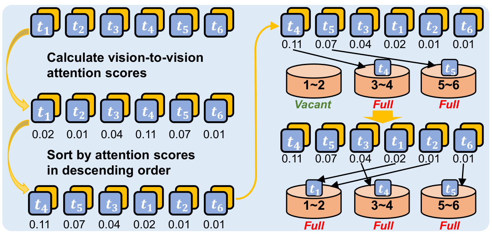
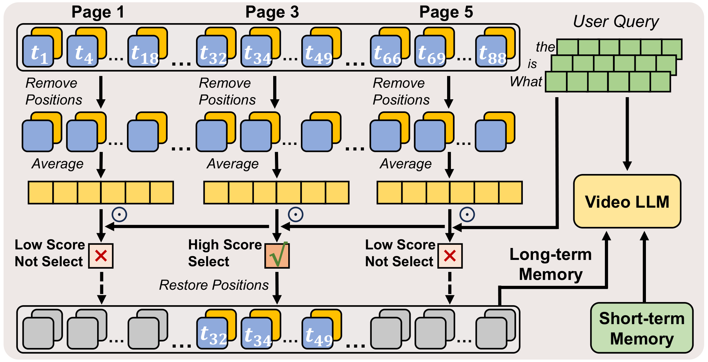

论文信息
| 作者 | Zhenyu Ning、Guangda Liu、Qihao Jin、Chengwei Li、Wenchao Ding、Minyi Guo、Jieru Zhao |
|---|---|
| 机构 | 上海交通大学、复旦大学、贵州大学等 |
| 发表 | DAC 2026（arXiv:2505.15269） |
| 一句话 | 以覆盖全视频时间轴的压缩 KV cache 和按问题检索机制，使 Video-LLM 能在未知未来问题的连续视频流上实时回答。 |
1. 核心摘要
LiveVLM 面向持续到来的长视频：视频 token 不断进入 Transformer 后，KV cache 会随时间线性增长；若等问题提出后再把整段视频送入模型，首 token 延迟又难以接受。作者给出无需再训练、且不预先知道用户问题的在线框架：Vision Sink Bucketing（VSB）在固定预算下压缩视觉 KV，同时尽量覆盖整段历史；Position-agnostic KV Retrieval（PaR）在问题出现时只取回相关 cache page，减少无关上下文干扰。
模型建立在 LLaVA-OneVision-Qwen2-7B-OV 上。论文在 24GB GPU、12k-token cache budget 下报告：MLVU 总分从基础模型的 64.7 提升到 68.1，VideoMME（无字幕）总体达到 59.6；StreamingBench overall 为 63.10，相比基础模型 58.85 提升 4.25 个百分点。该工作把“流式写入”和“查询时检索”拆开，是 VLA 历史 KV memory 的重要系统参照。
2. 研究动机
在线视频不是一次性长上下文
离线 VideoQA 默认视频完整可见，模型可在一个 prefill 中处理视觉 token。现实中的摄像头流、自动驾驶与机器人观测没有明确终点，且问题可能在任意时刻到来。直接保留完整 KV 会耗尽显存；滑动窗口虽节省容量，却会抹掉早期、可能与后续问题相关的证据。
query-agnostic 压缩与 query-aware 回答有矛盾
流式阶段不知道日后的具体问题，因此不能用问题 token 为所有历史视觉 token 打分。即使压缩后保留下来的内容质量较高，其中仍有不少与当前问题无关的证据。把整个压缩 cache 交给问答模型会扩大 attention 计算，也可能让无关片段干扰回答。
作者的切入点
作者观察到 vision-to-vision attention 中存在持续被其他视觉 token 关注的 sink token；它们比 text-to-vision attention 更适合作为未知问题条件下的保留信号。另一方面，常规 token 丢弃会让保留 token 的位置不连续，破坏 cache page 内 key 的相似性。因此系统既需要覆盖时间轴的写入规则，也需要在检索前解除位置编码带来的混淆。
3. 方法论
3.1 总体运行方式
每个 arriving clip 经视觉编码和基础 MLLM 产生新的 visual KVs，再与旧的压缩 cache 合并。VSB 将合并后的视觉 KVs 压至固定 token budget，作为下一轮流输入的历史状态。用户问题到达时，PaR 不直接让问题 attend 全部历史，而是把 cache 划为 pages、评估问题与每页的语义关联，仅恢复高相关 page 进入完整注意力。因而 VSB 负责“写什么”，PaR 负责“答题时读什么”。

Figure 2：Vision Sink Bucketing 在固定 cache 预算下兼顾高重要性 token 与跨时间位置覆盖。
3.2 Vision Sink Bucketing：覆盖优先的 query-agnostic 写入
FlashAttention 不显式给出完整 attention matrix。VSB 取末尾 r 个视觉 token 作为观察窗，计算它们对所有 cached keys 的局部 attention，并对 query 维平均：W = softmax(QKᵀ)，S = MeanPool(W)。这里 S 是每个历史视觉 token 的 importance score；论文称额外计算/显存开销低于 1%。
仅按 S 取全局 Top-M 会偏向最近局部区域。于是 VSB 将上下文按原始位置均分为 N 个 bucket，每桶容量 B，满足 N×B=M。第一阶段把最高分的 Top-R token 贪心放入对应 bucket，优先保留 sink token；第二阶段继续按分数从高到低遍历，只在目标桶尚有余量时写入。最终按 bucket 串接 selected KVs。它因此同时控制语义重要性与时间覆盖。

Figure 4：Position-agnostic KV Retrieval 在不连续位置的压缩 cache 中完成 page-level 检索。
3.3 PaR：先剥离位置，再做 page 检索
VSB 丢 token 后，剩余 key 携带不连续的位置编码。若直接以每个 page 的 mean key 表示该 page，page 内 key 的相似性会下降，问题与 page 的匹配会失真。PaR 在检索评分阶段先从 key 中移除位置编码，把位置无关的 keys 以大小 C 分页并平均，随后将问题 query 与 page mean keys 做简化 attention，按 pooled score 选取相关 pages。被取回的 KVs 再重新加入位置编码，进入正常模型推理。这个“检索表示”和“推理表示”解耦，是方法区别于只做压缩的关键。
3.4 部署参数与 VLA 对应
默认实验使用 12k cache budget、每桶容量 B=1、page size C=16，检索 cache 的 40%。系统使用 0.5 fps 处理流式视频。迁移到机器人时，可把视频 clip 换为控制周期观测：VSB 保留跨子任务阶段的视觉证据；PaR 以语言指令、当前策略隐状态或失败恢复 query 检索历史。需注意，这篇论文并未验证动作生成或接触状态，因此 robot state 仍应成为独立的写入/刷新信号。
4. 实验与结果
设置。离线评测使用 LongVideoBench、MLVU dev 与不含字幕的 VideoMME；在线评测使用 RVS-Ego、RVS-Movie 与 StreamingBench。基础模型为 LLaVA-OneVision-Qwen2-7B-OV，FP16，NVIDIA 4090D 24GB。ReKV、StreamMem、InfiniPot-V 和 Flash-VStream 是最相关的在线对照。
| 测试条件 | 对照 | LiveVLM | 结论 |
|---|---|---|---|
| MLVU overall | 基础 LLaVA-OneVision：64.7；ReKV：68.2 | 68.1 | 固定预算下，流式压缩可保留长视频所需证据。 |
| VideoMME（无字幕）overall | 基础模型：56.9；StreamMem：59.4 | 59.6 | 兼顾中长视频的离线问答质量。 |
| RVS-Ego / RVS-Movie 平均 | StreamMem：55.2 Acc / 3.6 Score | 55.6 Acc / 3.8 Score | 在无 CPU offload 的 24GB 公平约束下优于其他流式方法。 |
| StreamingBench overall | 基础模型：58.85；ReKV：57.20 | 63.10 | 对实时视觉与多源理解均有收益。 |
效率与消融。在 256 frames，LiveVLM 相比 Dispider 的峰值 GPU memory 降低 3.02×，相对 ReKV 降低 1.19×；响应延迟相对 ReKV 加速 1.73×。MLVU 消融中，无模块为 64.7，只有 VSB 为 66.2，VSB+PaR 为 68.1；检索比例 0.4 最优，继续增加至 1.0 会回落到 66.2，说明全量压缩 cache 仍包含干扰。
5. 优势与局限
| 优势 | 局限 / 迁移注意点 |
|---|---|
|
|
6. 总结
LiveVLM 将长视频流的 KV 管理分解为两件事：VSB 在写入时保留“重要且时间分散”的证据，PaR 在读取时从压缩历史中挑出与当前 query 相关的 pages。前者避免只记最近帧，后者避免把全部历史重新塞入 attention。
对 VLA 历史关键事件检测，最值得借鉴的是将事件检测放入 VSB 的写入策略：motion、appearance 和 robot state 不仅决定是否保留一个 token，还可决定该 token 应保留在近期高保真 cache、事件摘要 cache，还是长期可检索 page 中。